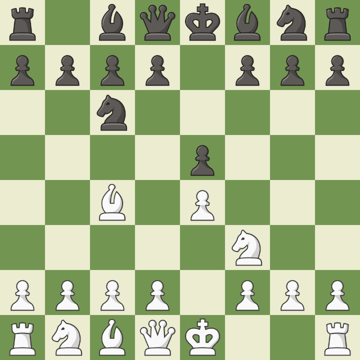

Italiana
Caracterizada por 1.e4 e5 2.Nf3 Nc6 3.Bc4. É uma das aberturas mais antigas, focada em desenvolvimento rápido e controle do centro. Pode levar a jogos abertos e táticos, especialmente com a linha do Giuoco Piano ou o Ataque Evans.
